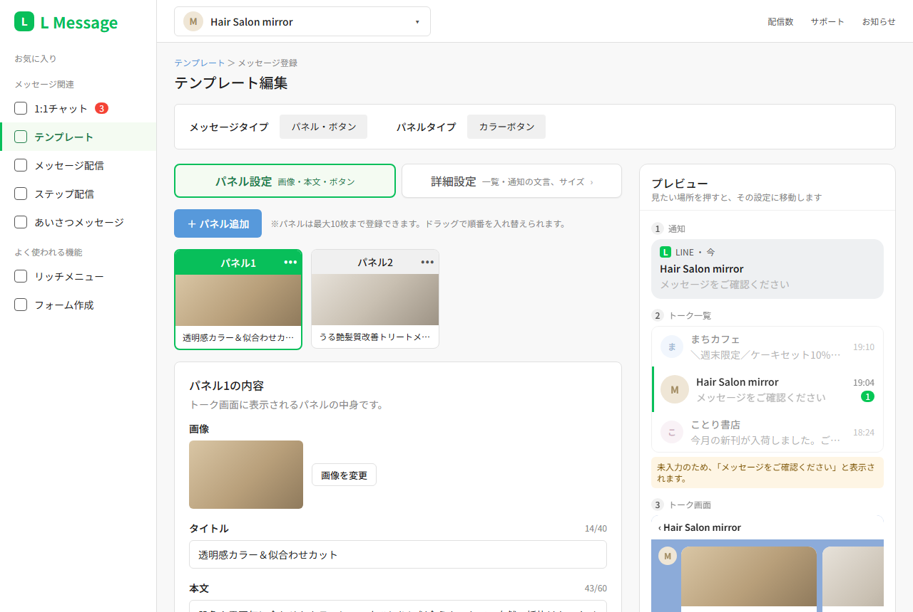
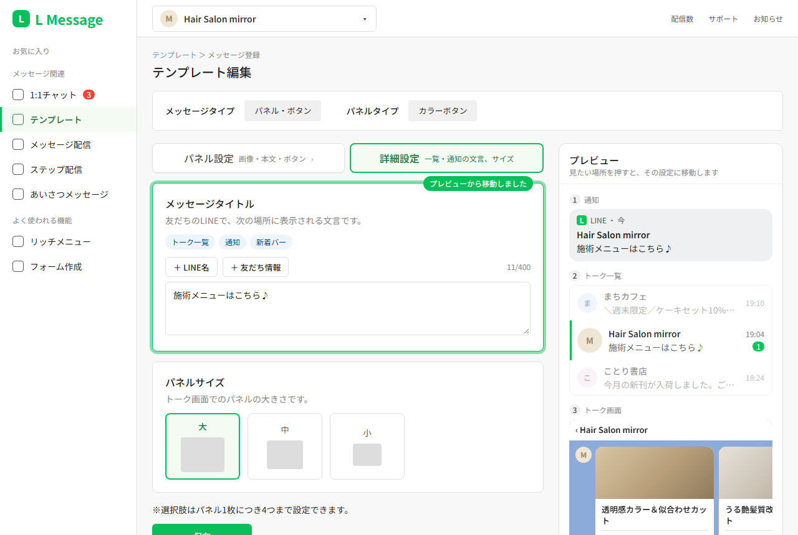
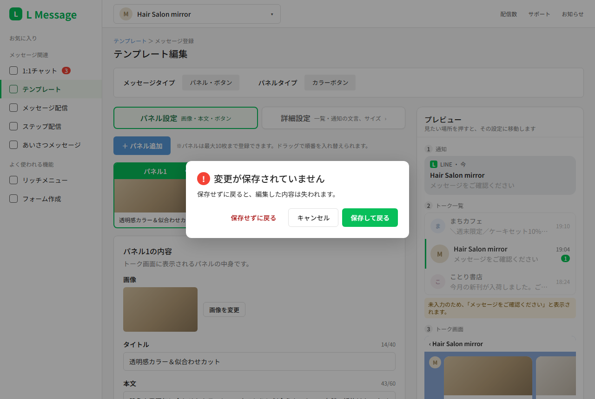
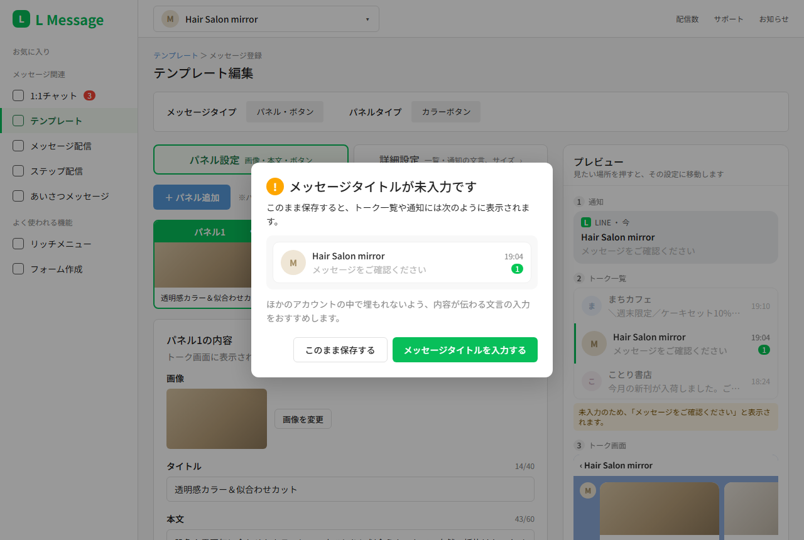
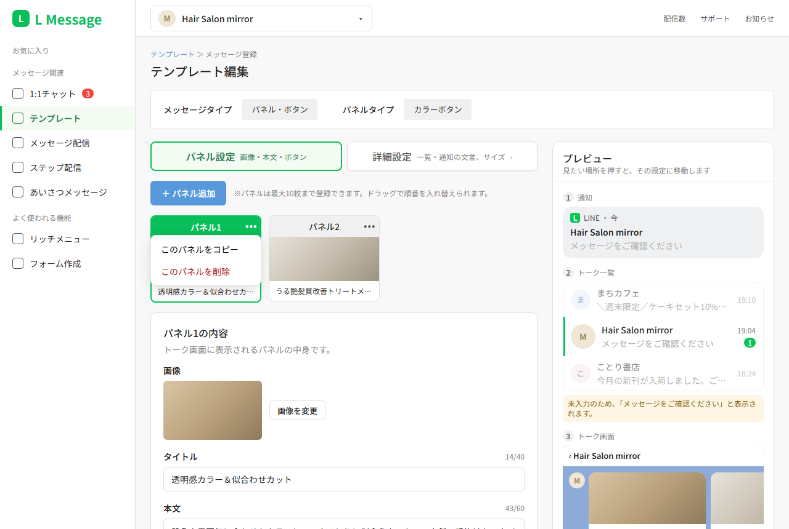

提案ドキュメント：テンプレート編集画面の「表示先プレビュー」
- 動くプロトタイプ：https://yoshiko1109.github.io/lmessage-proposal/
- 改善前との比較：https://yoshiko1109.github.io/lmessage-proposal/compare.html
① テーマ選定
選んだ機能領域：テンプレート（メッセージ登録）の編集画面
事前課題でメッセージタイトルを設定する際、トーク一覧に表示される文言が「メッセージタイトル」という名前で呼ばれていることを知らなかったため、「詳細設定」タブの中にあるその設定を探すために多くの時間を要しました。
テンプレートは、リッチメニューの返信・一斉配信・ステップ配信など、L Messageの多くの機能で使用される共通の部品です。そのため、この画面の使いにくさは広範囲に影響します。以上の理由から、本画面をテーマとして選定しました。
② 課題分析
発生した問題
トーク一覧に表示される文言を変更したかったものの、設定箇所にたどり着くことができませんでした。その原因として、以下の3点が重なっていたと考えます。
| # | つまずいた点 | 画面のどこが原因か |
|---|---|---|
| 1 | 開いた直後は見えない | 最初に開くのは「パネル設定」タブ。メッセージタイトルは「詳細設定」タブの中にある |
| 2 | タブだと気づきにくい | 選ばれていない「詳細設定」は灰色の文字だけで、押せるものに見えない |
| 3 | 呼び名が分からない | 「メッセージタイトル」という名前を知らないので、画面内もヘルプ・マニュアルも検索できなかった |


中でも3の影響が大きいと考えます。名称を知らない場合、画面内やヘルプでの検索はもちろん、他者に質問することも困難になります。
ユーザーは機能の名称ではなく「どこに、どのように表示されるか」を基準に考えています。一方で、画面は設定項目の名称を基準に整理されています。 この認識のずれが、根本的な原因であると考えます。
保存操作に関する課題
設定を修正した後に押す保存ボタンは、画面の一番下にしか配置されていません。そのため、保存ボタンに気づかないまま前の画面に戻ってしまい、修正内容が失われるおそれがあります。
また、保存ボタンは薄い緑の背景に緑の文字で表示されており、濃い青で塗られた「＋ボタン追加」などのボタンよりも目立ちません。最も重要な操作であるにもかかわらず視覚的な優先度が低く、押せない状態のようにも見えます。さらに、マウスオーバー時に保存ボタンは濃くなる一方、他のボタンは明るくなるなど、反応も統一されていません。

パネル編集に関する課題
改善前は、パネルの内容を編集する際に「このパネルを編集」ボタンを押す必要があり、編集中のパネルには「編集中」と表示されていました。パネルを選ぶ操作と編集を始める操作が分かれているため、直感的に操作できないと考えます。また、パネルの並べ替えは「…」メニューの「左に移動」「右に移動」で1枚ずつ行う必要があり、手間がかかります。

実機での検証結果（Android・リッチメニューの返信で検証）
| メッセージタイトルが空 | 「施術メニューはこちら♪」と入力 | |
|---|---|---|
| トーク画面 | パネルのみ表示（新着バーでの表示は未確認） | 通常はパネルのみ表示。過去のメッセージをさかのぼって見ている間に届いた場合のみ、画面下部の新着バーに「Hair Salon mirror:施術メニューはこちら♪」と表示 |
| トーク一覧 | 「メッセージをご確認ください」 | 「施術メニューはこちら♪」 |


この結果から、以下の課題が明らかになりました。
- 作った結果が、作った人の目に入りづらい。 トーク画面にタイトルが出るのは、過去のメッセージをさかのぼって見ている間に届いたときの新着バーだけ。テスト送信しても設定し忘れに気づきにくい。
- 空のままだと、どのお店でも同じ「メッセージをご確認ください」になる。
- 今ある見本画像が実際と違う。 詳細設定タブの見本は「エルメからのお知らせ」だが、実際は「メッセージをご確認ください」だった。今の見本では正しい見え方が分からない。
- トーク一覧はほかのアカウントと並ぶ場所。 同じ一覧の大手アカウントは「＼11月30日まで／スペシャルクーポン配布中♪」のように、開きたくなる文言を設定している。空のままだと、その中で埋もれる。
今後の検証課題
- つまずいた事例は自分の1件のみ。他の人も同じかは未確認。
- 通知での見え方は未確認（リッチメニューの返信はトーク画面を開いたまま受け取るため、通知はほぼ出ない）。一斉配信などでは通知にも出るはず。
- タイトルが空のとき、新着バーに何が表示されるかは未確認。
- iPhoneでの見え方は未確認。
③ 提案内容
新機能：表示先プレビュー
テンプレート編集画面の右側に、友だちのLINE上で実際にどのように表示されるかをプレビューとして表示します。プレビュー内の任意の箇所をクリックすると、該当する設定欄へ移動できます。
主な画面





設計方針とその理由
| 決めたこと | 理由 |
|---|---|
| 今ある「パネル用プレビュー」の場所を、実際の見え方プレビューに置き換える | 新しく場所を取らないので、横幅1280pxでも編集欄が狭くならない |
| 「パネル設定」と「詳細設定」のタブは分けたままにする | 1画面にまとめるとパネル編集が分かりにくくなるため。分かれていること自体は問題ではなく、タブに気づけないことが問題 |
| 選ばれていないタブも押せる見た目にする | 原因2（タブだと気づかない）の解決 |
| 「編集中」表示と「このパネルを編集」ボタンをなくし、パネル1・パネル2を選ぶだけでその編集画面を開く | 選ぶ操作と編集を始める操作を1回にまとめ、直感的に編集できるようにするため。選択中のパネルは緑の枠と見出しで示す |
| 並べ替えはパネルのドラッグで行い、「…」メニューは「このパネルをコピー」「このパネルを削除」だけにする | 「左に移動」「右に移動」を1回ずつ押すより、直接動かす方が直感的なため |
| パネルの削除時に確認を表示する | 削除は元に戻せないため、誤操作を防ぐ |
| プレビューはどちらのタブでも同じものを出す | 「詳細設定」に飛んだあとも、どこを直しているか見失わないため |
| 通知 → トーク一覧 → トーク画面の順に縦に並べる | 実際に相手が目にする形で確認できるようにするため |
| トーク一覧のプレビューは、架空のアカウントの行を上下に1行ずつ並べて表示する | 一覧の中で自分のお店の文言がどう見えるか（埋もれていないか）を確認できるようにするため。プレビューが長くなりすぎないよう、前後1行ずつにとどめる |
| プレビューは内側だけをスクロールし、保存ボタンは常に下に表示する | 3つを縦に並べてもプレビュー全体が長くなりすぎず、保存ボタンも見失わないようにするため |
| プレビューを押すと該当の設定欄へ移動する | 原因3（呼び名が分からない）の解決。名前を知らなくても「見え方」から設定にたどり着ける。ラベル名を変えるだけの改善との違いはここ |
| プレビューの下にも保存ボタンを置く | 保存ボタンが画面の一番下にしかなく、保存せずに戻ってしまうおそれがあるため。プレビューは常に右側に表示されるので、どこを編集していても保存ボタンが目に入る |
| 画面下部の既存の保存ボタンも残す | これまでどおり下まで入力してから保存する人も迷わないようにするため |
| 保存せずに画面を離れようとしたときに確認を表示する | 修正内容が失われる操作ミスを防ぐため |
| メッセージタイトルが空のまま保存しようとしたときに知らせる | 空のままだと、トーク一覧に「メッセージをご確認ください」という汎用の文言が表示され、ほかのアカウントの中で埋もれるため |
| 保存ボタンを濃い緑（#08bf5a・白文字）で塗る | 最も重要な操作であることがひと目で分かるようにするため。薄い色では押せない状態にも見える |
| マウスオーバー時は、ほかのボタンと同じく明るくする | ボタンごとに反応が異なると操作に迷うため。全ボタンで変化の向きを統一する |
| 「戻る」ボタンは現状のまま | 押し間違えた場合は、離脱時の確認で修正内容の消失を防げるため |
本機能による課題解決
| 誰の | どんな困りごとが | どう解消されるか |
|---|---|---|
| テンプレートを作るお店の担当者 | 設定の名前が分からず、目的の設定にたどり着けない | 見え方から押して、設定欄に直接移動できる |
| 同上 | 保存ボタンに気づかず、修正内容を保存しないまま画面を離れてしまう | 常に見えるプレビューの下から、すぐに保存できる |
| 同上 | 設定し忘れても気づけない | トーク画面では確認できない一覧・通知の見え方も、作りながら確認できる |
デザインガイドとの関係
フォントサイズ・ウェイトと、管理画面部分の配色は、L Messageのデザインガイドに準拠しました。プレビュー内では、友だちのLINEでの見え方を再現するため、LINEのアイコン色（#06c755）とトーク画面の背景色（#8cabd9）を使用しています。また、パネルのボタン色（#c3ad86）は、お店側で設定した値をそのまま表示しています。
| お店（成果） | 一覧で「メッセージをご確認ください」のまま埋もれ、開いてもらえない | 一覧での見え方を見ながら、開きたくなる文言を考えられる |
|---|
今後の展望
- 使われ方（リッチメニューの返信／一斉配信など）に合わせて、プレビューの中身を切り替える。リッチメニューの返信では通知がほぼ表示されないため、通知を省くなど
- 「見え方から設定へ移動する」仕組みを、詳細設定のほかの項目や、一斉配信・ステップ配信などほかのメッセージ作成画面にも広げる
④ AI活用プロセス
使用ツール
- Claude Code：仮説の点検、質問と選択肢の提示、提案書の下書き、プロトタイプの制作
- GitHub Pages：プロトタイプの公開
AIとの役割分担
AIには、仮説の弱いところの指摘、判断に必要な選択肢の提示、提案書とプロトタイプの作成を任せました。一方で、課題の発見、実機での検証、案の採否と最終的な判断は自分で行いました。
AIが一方的に作り進めることを避けるため、質問は順序立てた選択式で出させ、毎回「自由に書く」を選べるようにしました。選択肢にない考えは自分の言葉で伝え、AIの推奨案をそのまま採用しないことも多くありました。
企画・検証の段階
| 段階 | AIに頼んだこと | AIの出力 | 自分の判断 |
|---|---|---|---|
| 仮説の点検 | 「まだ作らず、仮説の弱いところを質問で指摘して」と依頼 | 今の画面にも見本画像があるので、プレビューがないことが原因ではないのでは、と指摘 | 自分のスクリーンショットを見せ、最初に開くタブからは見えないこと、呼び名を知らなかったことを補足。原因を3つに整理できた |
| 置き場所の検討 | 置き場所の案を出してもらう | 「タブをやめて1画面にまとめ、右側にプレビューを固定」を推奨 | 採用しなかった。 タブは理由があって分かれていると判断。今あるパネル用プレビューの場所を、実際の見え方プレビューに置き換える案を自分で出した |
| 事実確認 | 確認の手順を出してもらう | 通知を含む4パターンの確認手順 | 対象がリッチメニューの返信であることを伝え、手順が合っているか問い直した。通知はほぼ出ないと分かったため、手順を2回分に絞って実機で確認 |
| 確認結果の読み取り | スクリーンショットを読んでもらう | 空のときの文言、見本画像との違い、一覧での他社との比較を整理 | 空のときの「メッセージをご確認ください」が埋もれることを根拠に、未入力のまま保存するときの知らせを提案に加えた |
| AIの誤りの訂正 | 検証結果をもとに下書きを作ってもらう | 「メッセージタイトルはトーク画面にはどこにも出ない」と記述 | 誤りに自分で気づいた。 過去のメッセージをさかのぼって見ている間に届くと、画面下部の新着バーにタイトルが表示されることを実機で確認し、訂正させた |
| 保存ボタンの課題 | 自分で気づいた課題（保存ボタンが一番下にしかない）を伝え、提案書に加えてもらう | 既存の保存ボタンを残すか、保存せずに離れるときに確認を出すかを質問 | 両方を採用。さらに、保存ボタンの色が薄いこと、マウスオーバー時の反応がほかのボタンと逆であることを自分で指摘した |
| 保存ボタンの色 | マウスオーバーで明るくする案を伝える | 「薄い色のまま明るくすると、さらに見えにくくなる」と指摘し、普段の色を濃い緑にする案を提示 | 指摘を受け入れ、普段は濃い緑、マウスオーバーで明るくする形に決めた |
| 文章の調整 | 下書きの文体を指定 | 常体で書かれた下書き | 説明文はです・ます調、表と箇条書きは常体に分けるよう指示。言い回しも「多くの時間を要しました」のように具体的に直し、全体の硬さをそろえさせた |
プロトタイプ制作の段階
| 段階 | AIの出力 | 自分の判断 |
|---|---|---|
| 画面構成 | 必須3画面と追加候補2画面を提案 | 5画面すべてを作ると決めた |
| プレビューの見出し | 「友だちのLINEでの見え方」 | 「プレビュー」に変更 |
| 保存ボタン下の一文 | AIが独自に「変更はありません」という表示を追加 | 意味が分かりにくかったため、説明を求めたうえで削除 |
| 未入力時の注意書き | 「どのお店でも同じ文言が表示されています」 | 「「メッセージをご確認ください」と表示されます」と、実際の文言が分かる表現に変更 |
| パネルの選択 | パネルのカードを押すと編集画面が開く形で制作 | 改善前の「編集中」「このパネルを編集」をなくしたことを、提案書と比較ページに書くよう指示 |
| 「…」メニュー | AIが「…」メニューを省いていたことに気づき、中身を質問 | 「左に移動」「右に移動」はドラッグでの並べ替えに置き換えるよう指示。コピーと削除は残した |
| ほかのアカウントの行 | トーク一覧のプレビューに、架空のお店の行を並べる案を提示 | プレビューが長くなりすぎることを懸念し、上下1行ずつにとどめた |
| トーク画面のプレビュー | パネルごとに押すと、そのパネルの編集へ移る形で制作 | パネルが多いと横にスクロールできないため、まとめて「パネル」編集へ移る形に変更。移動先でパネルを切り替えられるので十分と判断 |
| 案内文 | 「押すと「メッセージタイトル」へ」 | 「〜編集へ」に変え、編集画面に移ることが分かるようにした |
| 公開時の配慮 | 個人のLINEのトーク一覧が写った画像の扱いを質問 | 自分のお店の行だけに切り抜いて公開することにした |
| 表示幅 | 横幅1280pxで制作 | 小さいウィンドウで「⑤ 改善前との比較」が見切れることに気づき、対応を依頼。ウィンドウ幅に合わせて縮小表示する形にした |